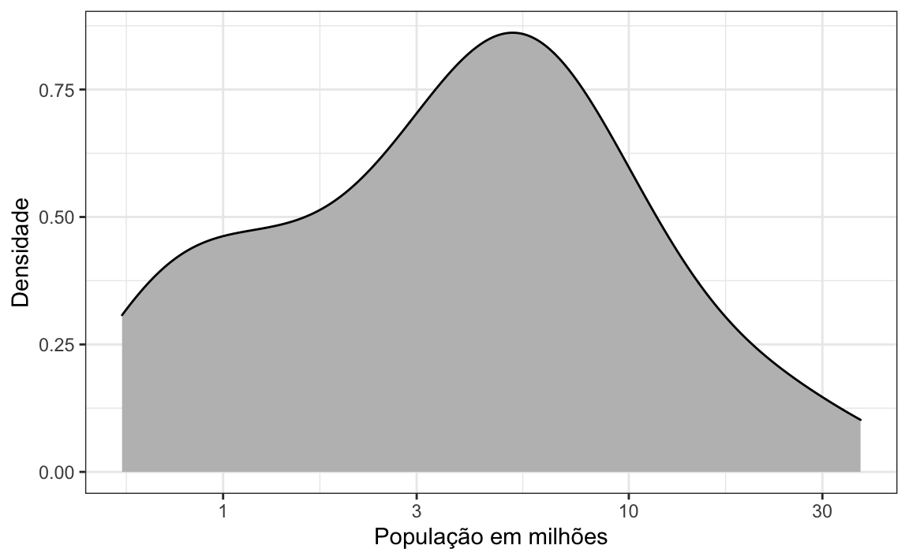
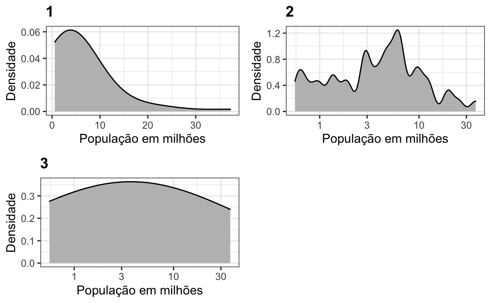
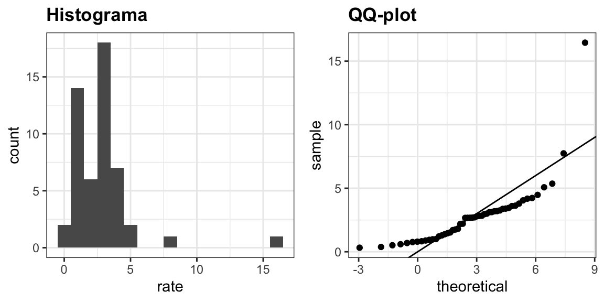
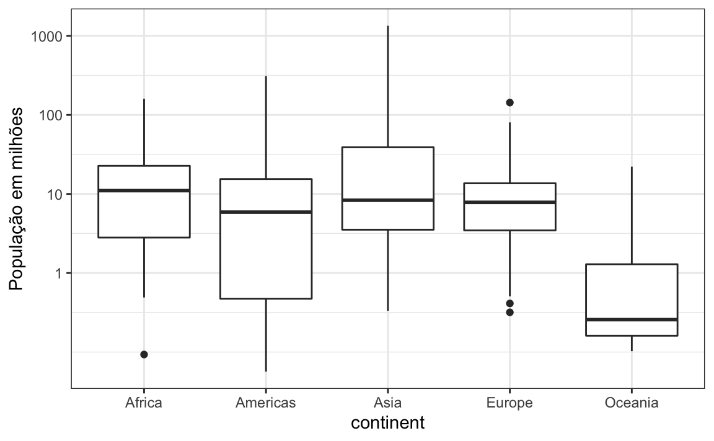
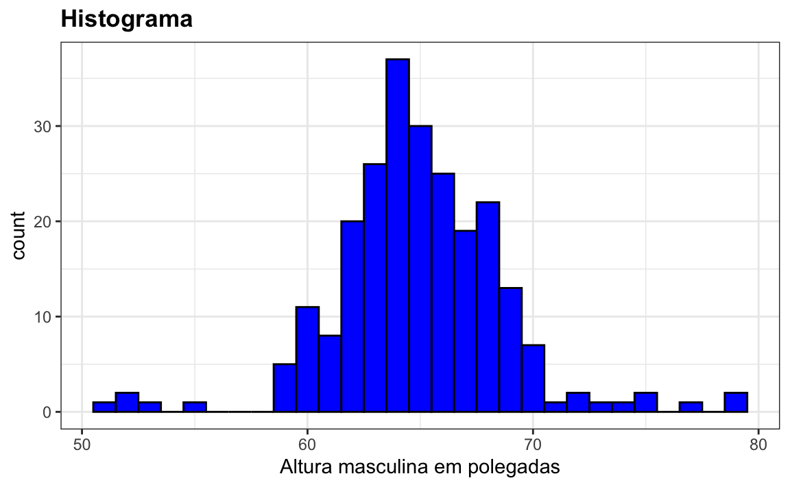

Capítulo 8 Visualizando distribuições de dados
Os dados numéricos são frequentemente resumidos com o valor da média. Por exemplo, a qualidade de uma escola secundária às vezes é resumida em um único número: a pontuação média em um teste padronizado. Ocasionalmente, um segundo número é incluído: o desvio padrão. Por exemplo, você pode ler um relatório afirmando que as pontuações foram 680 mais ou menos 50 (o desvio padrão). O relatório resumiu um vetor completo de pontuações com apenas dois números. Isso é apropriado? Existe alguma informação importante que não estamos considerando ao exibir esse resumo em vez da lista completa?
O primeiro componente básico de visualização de dados que aprenderemos será como resumir listas de fatores ou vetores de números. Na maioria das vezes, a melhor maneira de compartilhar ou explorar esses resumos é através da visualização de dados. O resumo estatístico mais básico de uma lista de objetos ou números é sua distribuição. Depois que um vetor é resumido como uma distribuição, existem várias técnicas de visualização de dados para transmitir efetivamente essas informações.
Neste capítulo, discutiremos primeiro as propriedades de uma variedade de distribuições e como visualizá-las usando como estudo de caso uma base de dados com altura de alunos. Então, na Seção 8.16, discutiremos as geometrias ggplot2 para essas visualizações.
8.1 Tipos de variáveis
Trabalharemos com dois tipos de variáveis: categórica e numérica. Cada uma pode ser dividida em dois outros grupos: as variáveis categóricas podem ser ordinais ou não, enquanto as numéricas podem ser discretas ou contínuas.
Quando cada entrada em um vetor vem de um pequeno número de grupos, nos referimos aos dados como dados categóricos. Dois exemplos simples são sexo (masculino ou feminino) e regiões (nordeste, sul, norte central, oeste). Alguns dados categóricos podem ser solicitados, mesmo que não sejam números, por exemplo, quão picante é um alimento (pouco, médio, muito). Nos livros de estatística, os dados categóricos ordenados são referidos como dados ordinais.
Exemplos de dados numéricos são tamanho da população, taxas de homicídios e altura. Alguns dados numéricos podem ser tratados como categóricos ordenados. Podemos dividir ainda mais os dados numéricos em contínuos e discretos. Variáveis contínuas são aquelas que podem assumir qualquer valor, como alturas, se forem medidas com precisão suficiente. Por exemplo, um par de botões de punho pode medir 68,12 e 68,11 polegadas, respectivamente. As contagens, como o tamanho da população, são discretas porque precisam ser números redondos.
Observe que dados numéricos discretos podem ser considerados ordinais. Embora isso seja tecnicamente verdadeiro, geralmente reservamos o termo dados ordinais para variáveis que pertencem a um pequeno número de grupos diferentes, com cada grupo tendo muitos membros. Por outro lado, quando temos muitos grupos com poucos casos em cada grupo, geralmente nos referimos a eles como variáveis numéricas discretas. Assim, por exemplo, o número de maços de cigarro que uma pessoa fuma por dia, arredondado para o maço mais próximo, seria considerado ordinal, enquanto o número real de cigarros seria considerado uma variável numérica. No entanto, existem exemplos que podem ser considerados numéricos e ordinais quando se trata de visualizar dados.
8.2 Estudo de caso: descrevendo a altura dos alunos
Aqui, apresentamos um novo problema motivador. É um exemplo artificial, mas nos ajudará a ilustrar os conceitos necessários para entender as distribuições.
Imagine que precisamos descrever as alturas de nossos colegas de classe para um ET, um alienígena que nunca viu seres humanos. Como primeiro passo, precisamos coletar dados. Para fazer isso, pedimos aos alunos que indiquem suas alturas em polegadas. Pedimos ainda que forneçam informações sobre o seu sexo biológico, porque sabemos que existem duas distribuições diferentes por sexo. Coletamos os dados e salvamos no data frame heights:
library(tidyverse)
library(dslabs)
data(heights)Uma maneira de passar as alturas para o ET é simplesmente enviar a ele esta lista de 1,050 alturas. Entretanto, existem maneiras muito mais eficazes de transmitir essas informações, e entender o conceito de uma distribuição ajudará. Para simplificar a explicação, primeiro nos concentraremos nas alturas masculinas. Examinaremos os dados de altura feminina na Seção 8.14.
8.3 Função de distribuição
Acontece que, em alguns casos, a média e o desvio padrão são praticamente tudo que precisamos para entender os dados. Aprenderemos técnicas de visualização de dados que nos ajudarão a determinar quando esse resumo de dois números é apropriado. Essas mesmas técnicas servirão como uma alternativa para quando esses dois números não forem suficientes.
O resumo estatístico mais básico de uma lista de objetos ou números é sua distribuição. A maneira mais simples de pensar em uma distribuição é como uma descrição compacta de uma lista com muitas entradas. Este conceito não deve ser novo para os leitores deste livro. Por exemplo, com dados categóricos, a distribuição simplesmente descreve a proporção de cada categoria exclusiva. Para o sexo representado no conjunto de dados de altura seria:
#>
#> Female Male
#> 0.227 0.773Essa tabela de frequência de duas categorias é a forma mais simples de uma distribuição. Nós não precisamos realmente visualizar isso, pois um número descreve tudo o que precisamos saber: 23% são mulheres e os restantes são homens. Quando há mais categorias, um gráfico de barras simples pode descrever a distribuição. Aqui está um exemplo de distribuição dos estados dos EUA por região:
#> `summarise()` ungrouping output (override with `.groups` argument)
Esse gráfico simplesmente mostra quatro números, um para cada categoria. Geralmente usamos gráficos de barras quando temos poucos números. Embora esse gráfico em particular não forneça muito mais informações do que uma tabela de frequência, ele é um excelente exemplo de como convertemos um vetor em um gráfico que resume sucintamente todas as informações. Quando os dados são numéricos, a tarefa de exibir distribuições é mais desafiadora.
8.4 Funções de distribuição acumulada
Dados numéricos que não são categóricos também têm distribuições. Em geral, quando os dados não são categóricos, a indicação da frequência de cada entrada não é um resumo efetivo, pois a maioria das entradas são únicas. Por exemplo, em nosso estudo de caso, enquanto vários estudantes relataram uma altura de 68 polegadas, dois estudantes relataram alturas de 68.503937007874 e 68.8976377952756 polegadas. Acreditamos que eles tenham convertido suas alturas para polegadas a partir dos valores 174 e 175 centímetros, respectivamente.
Os livros de estatística nos ensinam que uma maneira mais útil de definir uma distribuição numérica de dados é definir uma função que indica a proporção dos dados abaixo de \(a\) para todos os valores possíveis de \(a\). Essa função é chamada de função de distribuição acumulada (FDA). Em estatística, a seguinte notação é usada:
\[ F(a) = \mbox{Pr}(x \leq a) \]
Aqui vemos um gráfico de \(F\) para dados de altura de estudantes do sexo masculino:

Semelhante ao que a tabela de frequência faz para dados categóricos, o FDA define a distribuição de dados numéricos. No gráfico, podemos ver que 16% dos valores são menores que 65, pois \(F(66)=\) 0.164, ou que 84% dos valores são menores que 72, pois \(F(72)=\) 0.841 e assim por diante. De fato, podemos relatar a proporção de valores entre duas alturas, denominadas aqui como \(a\) e \(b\), ao computar \(F(b) - F(a)\). Isso significa que, se enviarmos esse diagrama para o ET, ele terá todas as informações necessárias para reconstruir a lista completa. Parafraseando a expressão “uma imagem vale mais que mil palavras,” neste caso, uma imagem é tão informativa quanto 812 números.
Uma observação final: como os FDAs podem ser matematicamente definidos, a palavra empírico é adicionada para distinguir quando os dados são usados. Portanto, usamos o termo FDA empírico (FDAE).
8.5 Histogramas
Embora o conceito de FDA seja amplamente discutido nos livros estatísticos, o gráfico não é muito popular na prática. O principal motivo é que ele não transmite facilmente características de interesse, como: em que valor a distribuição se concentra? A distribuição é simétrica? Quais intervalos contêm 95% dos valores? Os histogramas são preferidos porque facilitam responder a essas perguntas. Os histogramas sacrificam apenas um pouco de informação para produzir gráficos muito mais fáceis de interpretar.
A maneira mais fácil de criar um histograma é dividir a distribuição dos nossos dados em compartimentos de mesmo tamanho que não se sobrepõem. Então, para cada compartimento, contamos o número de valores que estão nesse intervalo. O histograma representa graficamente essas contagens como barras em que a base é definida pelos intervalos. Aqui está o histograma para os dados de altura separados pelos intervalos de valores em polegadas: \([49.5, 50.5], [51.5,52.5],(53.5,54.5],...,(82.5,83.5]\)

Como você pode ver na figura acima, um histograma é semelhante a um gráfico de barras, mas se diferencia pelo fato de o eixo x ser numérico e não categórico.
Se enviarmos esse gráfico para o ET, ele aprenderá imediatamente alguns detalhes importantes sobre nossos dados. Primeiro, o intervalo de dados varia de 50 a 84, com a maioria (acima de 95%) entre 63 e 75 polegadas. Em segundo lugar, as alturas são quase simétricas ficando em torno de 69 polegadas. Além disso, adicionando contagens, o ET poderia obter uma aproximação muito boa da proporção dos dados em qualquer intervalo. Portanto, o histograma acima não é apenas mais fácil de interpretar, mas também oferece quase todas as informações contidas na lista com 812 alturas em menos de 30 barras.
Que informações perdemos? Note que todos os valores em cada intervalo são tratados da mesma maneira ao calcular as alturas das barras. Por exemplo, o histograma não distingue entre 64, 64,1 e 64,2 polegadas. Como essas diferenças são quase imperceptíveis aos olhos, as implicações práticas são desprezíveis e conseguimos resumir os dados em apenas 23 números.
Discutimos como codificar histogramas na Seção 8.16.
8.6 Curvas de densidade
Os gráficos de densidade, também conhecidos como curvas de densidade suavizadas (smooth density), são esteticamente mais atraentes que os histogramas. Abaixo, vemos um gráfico de densidade para nossos dados de altura:

Nesse gráfico, não temos mais extremidades afiadas nos limites de intervalo e muitos dos picos locais foram removidos. Além disso, a escala do eixo y mudou de contagens para densidade.
Para entender o gráfico de densidade, precisamos entender sobre estimativas, um tópico que não abordaremos até mais tarde. No entanto, ofereceremos aqui uma explicação heurística para ajudá-lo a entender o básico, e assim, você possa usar essa útil ferramenta na visualização de dados.
O principal novo conceito que você precisa entender é que assumimos que nossa lista de valores observados é um subconjunto de uma lista muito maior de valores não observados. No caso das alturas, você pode imaginar que nossa lista com 812 estudantes do sexo masculino se origina de uma lista hipotética que contém as alturas de todos os estudantes do mundo, medidas com grande precisão. Digamos que existam 1.000.000 dessas medidas. Essa lista de valores tem uma distribuição, como qualquer lista de valores. Essa distribuição considerável é o que queremos realmente reportar ao ET, pois é muito mais geralizada. Infelizmente, não conseguimos ver isso.
Entretanto, podemos fazer uma suposição que pode nos ajudar a obter um resultado aproximado disso. Se tivéssemos 1.000.000 valores, medidos com muita precisão, poderíamos fazer um histograma com barras de compartimentos muito, muito pequenas. A suposição é que, se mostrarmos isso, a altura das barras consecutivas será semelhante. Isso é o que queremos dizer com densidade suave (smooth density): não temos grandes saltos nas alturas de barras consecutivas. Aqui está um histograma hipotético com barras de tamanho 1:

Quanto menor o intervalo do compartimento das barras, mais suave o histograma se torna. Aqui estão os histogramas com larguras de compartimento de 1, 0,5 e 0,1:

A densidade suave é basicamente a curva que atravessa a parte superior das barras do histograma quando os compartimentos são muito, muito pequenos. Para que a curva não dependa do tamanho hipotético da lista hipotética, calculamos a curva usando frequências em vez de contagens:

Agora, voltamos à realidade. Não temos milhões de medições. Em vez disso, temos 812 e não podemos fazer um histograma com compartimentos muito pequenos.
Portanto, fazemos um histograma usando tamanhos de compartimento apropriados para nossos dados e calculamos as frequências em vez de contagens. Além disso, desenhamos uma curva suave que passa pelo topo das barras do histograma. Os gráficos a seguir mostram as etapas que levam à construção das curvas de densidade suavizadas:

No entanto, lembre-se de que suave é um termo relativo. De fato, podemos controlar a suavidade da curva alterando o número de pontos nos compartimentos. Aqui estão dois exemplos que usam diferentes níveis de suavidade no mesmo histograma:
 Precisamos tomar essa decisão com cuidado, pois as visualizações resultantes podem alterar nossa interpretação dos dados. Devemos selecionar um grau de suavidade que sejam representativos para os dados subjacentes. No caso da altura, realmente temos motivos para acreditar que a proporção de pessoas com alturas semelhantes deve ser a mesma. Por exemplo, a proporção de estudantes com 72 polegadas de altura deve ser mais próxima à proporção de estudantes com 71 do que com 78 ou 65 polegadas. Isso implica que a curva deve ser razoavelmente suave; isto é, a curva deve se parecer mais com o exemplo à direita do que com a esquerda.
Precisamos tomar essa decisão com cuidado, pois as visualizações resultantes podem alterar nossa interpretação dos dados. Devemos selecionar um grau de suavidade que sejam representativos para os dados subjacentes. No caso da altura, realmente temos motivos para acreditar que a proporção de pessoas com alturas semelhantes deve ser a mesma. Por exemplo, a proporção de estudantes com 72 polegadas de altura deve ser mais próxima à proporção de estudantes com 71 do que com 78 ou 65 polegadas. Isso implica que a curva deve ser razoavelmente suave; isto é, a curva deve se parecer mais com o exemplo à direita do que com a esquerda.
Embora o histograma seja um resumo sem suposições, a densidade suavizada é baseada em algumas suposições.
8.6.1 Interpretando o eixo y
Observe que a interpretação do eixo y de um gráfico de densidade suave não é óbvia. Ele é dimensionado para que a área sob a curva de densidade seja igual a 1. Se você imaginar que formamos um compartimento com uma base de 1 unidade de comprimento, o valor do eixo y indica a proporção de valores nesse compartimento. No entanto, isso é válido apenas para compartimentos de tamanho 1. Para intervalos de outro tamanho, a melhor maneira de determinar a proporção de dados nesse intervalo é calculando a proporção da área total contida no intervalo. Por exemplo, aqui vemos a proporção de valores entre 65 e 68:

A proporção dessa área é de aproximadamente 0.3, o que significa que aproximadamente NaN% das alturas dos estudantes do sexo masculino estão entre 65 e 68 polegadas.
Ao entender isso, estamos prontos para usar as curvas de densidade como uma forma de sumarizar. Para esse conjunto de dados, nos sentimos confortáveis em assumir suavidade e, assim, compartilhar essa figura esteticamente agradável com o ET, que pode usá-la para entender nossos dados de altura masculina:

8.6.2 Densidades permitem a estratificação
Como nota final, observamos que uma vantagem das densidades suaves sobre os histogramas para propósitos de visualização é que as densidades facilitam a comparação entre duas distribuições. Isso se deve em grande parte às bordas irregulares do histograma, que geram confusão. Aqui está um exemplo comparando as alturas masculina e feminina:

Com o argumento correto, ggplot sombreia automaticamente a região de interseção com uma cor diferente. Mostraremos exemplos de códigos para densidades do ggplot2 na Seção 9 bem como na Seção 8.16.
8.7 Exercícios
1. No conjunto de dados murders (assassinatos), a região é uma variável categórica e sua distribuição é a seguinte:
#> `summarise()` ungrouping output (override with `.groups` argument)
Arredondando para os 5% mais próximos, qual a proporção de estados na região “Centro-Norte” (North Central)?
2. Qual das seguintes opções é verdadeira?
- O gráfico acima é um histograma.
- O gráfico acima mostra apenas quatro números com um gráfico de barras.
- As categorias não são números, portanto, não faz sentido representar graficamente a distribuição.
- As cores, e não a altura das barras, descrevem a distribuição.
3. O gráfico a seguir mostra o FDAE para a altura dos homens:

De acordo com o gráfico, qual a porcentagem de homens com menos de 75 polegadas?
- 100%
- 95%
- 80%
- 72 polegadas
4. Considerando o valor em polegadas mais próximo, qual a altura m que separa a metade dos estudantes do sexo masculino maiores da outra metade?
- 61 polegadas
- 64 polegadas
- 69 polegadas
- 74 polegadas
5. Aqui está um FDAE das taxas de homicídio entre os estados:

Sabendo que existem 51 estados (contando DC) e com base nesse gráfico, quantos estados têm taxas de homicídios superiores a 10 por 100.000 pessoas?
- 1
- 5
- 10
- 50
6. De acordo com o FDAE anterior, qual das seguintes afirmações é verdadeira?
- Cerca de metade dos estados têm taxas de homicídio acima de 7 por 100.000 e a outra metade abaixo.
- A maioria dos estados tem taxas de homicídio inferiores a 2 por 100.000.
- Todos os estados têm taxas de homicídio superiores a 2 por 100.000.
- Com exceção de 4 estados, as taxas de homicídio são inferiores a 5 por 100.000.
7. Abaixo é apresentado o histograma das alturas masculinas do conjunto de dados heights:

De acordo com esse gráfico, quantos homens possuem entre 63,5 e 65,5 polegadas de altura?
- 10
- 24
- 34
- 100
8. Aproximadamente, qual porcentagem tem menos de 60 polegadas?
- 1%
- 10%
- 25%
- 50%
9. Com base no gráfico de densidade abaixo, qual a proporção aproximada de estados dos EUA tem populações com mais de 10 milhões de habitantes?

- 0,02
- 0,15
- 0,50
- 0,55
10. Abaixo estão três gráficos de densidade. É possível que eles sejam do mesmo conjunto de dados?

Qual das seguintes afirmações é verdadeira?
- É impossível que eles sejam do mesmo conjunto de dados.
- Eles são do mesmo conjunto de dados, mas os gráficos são diferentes devido a erros no código.
- Eles são do mesmo conjunto de dados, mas o primeiro e o segundo gráficos aplica uma baixa suavização, enquanto o terceiro gráfico suaviza demais.
- Eles são do mesmo conjunto de dados, mas o primeiro não está na escala logarítmica, o segundo suaviza pouco e o terceiro suaviza demais.
8.8 Distribuição normal
Histogramas e gráficos de densidade fornecem excelentes resumos de uma distribuição. Mas podemos resumi-los melhor? Muitas vezes vemos a média e o desvio padrão usados como um resumo estatístico: um resumo de dois números! Para entender o que são esses resumos e por que são tão usados, precisamos entender a distribuição normal.
A distribuição normal, também conhecida como curva de sino ou como distribuição Gaussiana, é um dos conceitos matemáticos mais famosos da história. Uma razão para isso é que distribuições aproximadamente normais ocorrem em muitas situações, incluindo em jogos de azar, alturas, pesos, pressão arterial, resultados de testes padronizados e erros de medição experimental. Existem explicações para isso e as descreveremos posteriormente. Aqui, focamos em como a distribuição normal nos ajuda a resumir os dados.
Em vez de usar dados, a distribuição normal é definida com uma fórmula matemática. Para qualquer intervalo \((a,b)\), a proporção de valores nesse intervalo pode ser calculada usando esta fórmula:
\[\mbox{Pr}(a < x < b) = \int_a^b \frac{1}{\sqrt{2\pi}s} e^{-\frac{1}{2}\left( \frac{x-m}{s} \right)^2} \, dx\]
Você não precisa memorizar ou entender os detalhes da fórmula. Entretanto, note que essa fórmula é completamente definida por apenas dois parâmetros: \(m\) e \(s\). O restante dos símbolos na fórmula representa os extremos do intervalo que determinamos, \(a\) e \(b\), além das constantes matemáticas conhecidas \(\pi\) e \(e\). Esses dois parâmetros, \(m\) e \(s\), são conhecidos como média (do inglês average ou mean) e desvio padrão (do inglês standard deviation ou SD) da distribuição, respectivamente.
A distribuição é simétrica, centrada na média, e a maioria dos valores (cerca de 95%) está dentro de 2 desvios padrão (DP) da média. É assim que a distribuição normal se parece quando a média é 0 e o DP é 1:

O fato de a distribuição ser definida por apenas dois parâmetros implica que, se a distribuição de um conjunto de dados puder ser aproximada por uma distribuição normal, todas as informações necessárias para descrever a distribuição poderão ser codificadas em apenas dois números: a média e o desvio padrão. Agora vamos definir esses valores para uma lista arbitrária de números.
Para uma lista de números contidos em um vetor x, a média é definida como:
m <- sum(x)/ length(x)e o DP é definido como:
s <- sqrt(sum((x-mu)^2)/ length(x))que pode ser interpretado como a distância média entre os valores e sua média.
Vamos calcular os valores para alturas de homens que armazenaremos no objeto \(x\):
index <- heights$sex == "Male"
x <- heights$height[index]As funções predefinidas mean e sd podem ser usadas aqui (note que, por razões que serão explicadas na Seção ??, sd é calculado dividindo por length(x)-1 em vez de length(x)):
m <- mean(x)
s <- sd(x)
c(average = m, sd = s)
#> average sd
#> 69.31 3.61Aqui está um gráfico da densidade suave. A distribuição normal com média = 69.3 e DP = 3.6 foi plotada como uma linha preta com a curva de densidade suave da altura dos alunos em azul:

A distribuição normal parece ser uma boa aproximação aqui. Veremos agora como essa aproximação funciona para prever a proporção de valores dentro dos intervalos.
8.9 Unidades padrão
Para dados que estão aproximadamente com distribuição normal, é conveniente pensar em termos de unidades padrão. A unidade padrão de um valor nos diz a quantos desvios padrão da média ele está. Especificamente, para um valor x de um vetor X, definimos o valor de x em unidades padrão como z = (x - m)/s, sendo m e s a média e desvio padrão de X, respectivamente. Por que é conveniente fazer isso?
Primeiro, olhe novamente a fórmula da distribuição normal e note que o que está sendo exposto é \(-z^2/2\) com \(z\) equivalente a \(x\) em unidades padrão. Uma vez que o máximo de \(e^{-z^2/2}\) é alcançado quando \(z=0\), isso explica por que o máximo da distribuição ocorre na média. Também explica a simetria, pois \(-z^2/2\) é simétrico em torno de 0. Além disso, observe que, se convertermos dados normalmente distribuídos em unidades padrão, poderemos saber rapidamente, por exemplo, se uma pessoa está na média (\(z=0\)), entre os maiores(\(z \approx 2\)), entre os menores (\(z \approx -2\)) ou apresenta uma ocorrência extremamente rara (\(z > 3\) ou \(z < -3\)). Lembre-se de que, independentemente das unidades originais, essas regras se aplicam a todos os dados que são aproximadamente normais.
Em R, podemos obter as unidades padrão usando a função scale:
z <- scale(x)Agora, para ver quantos homens estão dentro de 2 DP da média, simplesmente digitamos:
mean(abs(z) < 2)
#> [1] 0.95A proporção é de aproximadamente 95%, que é o que a distribuição normal prevê! Para ter ainda mais confirmação de que a aproximação é precisa, podemos usar gráficos QQ (quantile-quantile plots).
8.10 Gráficos QQ
Uma maneira sistemática de avaliar quão bem a distribuição normal se ajusta aos dados é verificar se as proporções observadas e previstas correspondem. Em geral, essa é a abordagem do gráfico quantil-quantil (Gráfico QQ ou QQ-plot).
Primeiro, vamos definir os quantis teóricos para a distribuição normal. Nos livros de estatística, usamos o símbolo \(\Phi(x)\) para definir a função que nos dá a probabilidade de que uma distribuição normal padrão seja menor que \(x\). Por exemplo, \(\Phi(-1.96) = 0.025\) e \(\Phi(1.96) = 0.975\). Em R, podemos avaliar \(\Phi\) usando a função pnorm:
pnorm(-1.96)
#> [1] 0.025A função inversa \(\Phi^{-1}(x)\) nos fornece os quantis teóricos da distribuição normal. Por exemplo, \(\Phi^{-1}(0.975) = 1.96\). Em R, podemos avaliar o inverso de \(\Phi\) usando a função qnorm.
qnorm(0.975)
#> [1] 1.96Note que esses cálculos são para a distribuição normal padrão (média = 0, desvio padrão = 1), mas também podemos defini-los para qualquer distribuição normal. Podemos fazer isso usando os argumentos mean e sd nas funções pnorm e qnorm. Por exemplo, podemos usar qnorm para determinar quantis de uma distribuição com média e desvio padrão específicos:
qnorm(0.975, mean = 5, sd = 2)
#> [1] 8.92Para a distribuição normal, todos os cálculos relacionados aos quantis são executados sem dados, por isso recebem o nome de quantis teóricos. Mas quantis podem ser definidos para qualquer distribuição, mesmo empíricas. Então, se tivermos dados em um vetor \(x\), podemos definir o quantil associado a qualquer proporção \(p\), assim como o \(q\) para os quais a proporção de valores abaixo de \(q\) é \(p\). Usando o código R, podemos definir q como o valor pelo qual mean(x <= q) = p. Note que nem todo \(p\) tem um \(q\) para o qual a proporção é exatamente \(p\). Existem várias maneiras de definir os melhores \(q\) conforme discutido na página de ajuda da função quantile.
Como um exemplo rápido, para dados de altura masculina, vemos que:
mean(x <= 69.5)
#> [1] 0.515Portanto, cerca de 50% são menores ou iguais a 69 polegadas. Isso implica que se \(p=0.50\), então \(q=69.5\).
A ideia de um gráfico QQ é que, se seus dados forem bem aproximados pela distribuição normal, os quantis de seus dados deverão ser semelhantes aos quantis de uma distribuição normal. Para criar um gráfico QQ, fazemos o seguinte:
- Definimos um vetor de \(m\) dimensões \(p_1, p_2, \dots, p_m\).
- Definimos um vetor de quantis \(q_1, \dots, q_m\) para as proporções \(p_1, \dots, p_m\) usando seus dados. Nos referimos a eles como quantis de amostra.
- Definimos um vetor de quantis teóricos para as proporções \(p_1, \dots, p_m\) para uma distribuição normal com a mesma média e desvio padrão dos dados.
- Plotamos os quantis da amostra versus os quantis teóricos.
Vamos construir um diagrama QQ usando um código em R. Comece definindo o vetor de proporções.
p <- seq(0.05, 0.95, 0.05)Para obter os quantis dos dados, podemos usar a função quantile assim:
sample_quantiles <- quantile(x, p)Para obter os quantis teóricos da distribuição normal com a média e o desvio padrão correspondentes, usamos a função qnorm:
theoretical_quantiles <- qnorm(p, mean = mean(x), sd = sd(x))Para ver se eles correspondem ou não, nós os plotamos um contra o outro e desenhamos a linha de identidade:
qplot(theoretical_quantiles, sample_quantiles) + geom_abline()
Observe que esse código é muito mais limpo se usarmos unidades padrão:
sample_quantiles <- quantile(z, p)
theoretical_quantiles <- qnorm(p)
qplot(theoretical_quantiles, sample_quantiles) + geom_abline()O código acima foi apresentado para ajudar a melhor descrever o conceito dos gráficos QQ. No entanto, na prática, é mais fácil usar as funções do ggplot2, descritos na Seção 8.16:
heights %>% filter(sex == "Male") %>%
ggplot(aes(sample = scale(height))) +
geom_qq() +
geom_abline()Enquanto na ilustração anterior usamos 20 quantis, a função geom_qq usa, por padrão, a mesma quantidade de quantis que dados.
8.11 Percentis
Antes de continuar, vamos definir alguns termos que são comumente usados na análise exploratória de dados.
Percentis (percentiles) são formas de quantis comumente usadas. Percentis são quantis que podem ser obtidos ao definir \(p\) como \(0.01, 0.02, ..., 0.99\). Por exemplo, \(p=0.25\) é denominado como 25º percentil, pois fornece um número para o qual 25% dos dados estão abaixo. O percentil mais famoso é 50º, também conhecido como mediana.
Para a distribuição normal, a mediana e a média são as mesmas, mas geralmente não é o caso.
Outro caso especial que recebe um nome são os quartis, obtidos através da configuração \(p=0.25\), \(0.50\) e \(0.75\).
8.12 Diagramas de caixas (boxplots)
Para apresentar os boxplots (diagramas de caixas), usaremos mais uma vez os dados de assassinatos nos EUA. Vamos supor que queremos sumarizar a distribuição da taxa de homicídios. Usando as técnicas de visualização de dados que aprendemos anteriormente, podemos ver que a aproximação normal não se aplica aqui:

Nesse caso, o histograma acima ou um gráfico de densidade suave serviria como um resumo relativamente sucinto.
Agora, suponha que aqueles que estão acostumados a receber apenas dois números como resumos solicitem uma sumarização numérica mais compacta.
Aqui, Tukey ofereceu alguns conselhos. Primeiramente, ele sugeriu fornecer um resumo de cinco números compostos pelo intervalo, juntamente com os quartis (percentis 25, 50 e 75). Além disso, Tukey sugeriu ignorar outliers ao calcular o intervalo, sendo preferível plotá-los como pontos independentes. Ofereceremos uma explicação detalhada dos outliers mais adiante. Por fim, ele recomendou que representássemos graficamente esses números como uma “caixa” com “fios de bigode,” assim:

com a caixa definida pelos percentis 25% e 75% e os bigodes mostrando o intervalo. A distância entre esses dois é chamada de intervalo interquartil. Os dois pontos são representam valores discrepantes (outliers), conforme definido por Tukey. A mediana é mostrada com uma linha horizontal. Hoje, chamamos esse gráfico de boxplot.
A partir desse simples gráfico, sabemos que a mediana é de aproximadamente 2,5, que a distribuição não é simétrica e que o intervalo varia de 0 a 5 para a grande maioria dos estados, com duas exceções.
Discutimos como criar boxplots na Seção 8.16.
8.13 Estratificação
Na análise de dados, geralmente dividimos as observações em grupos com base nos valores de uma ou mais variáveis associadas a essas observações. Por exemplo, na próxima seção, dividiremos os valores de altura em grupos de acordo com uma variável de gênero: mulheres e homens. Chamamos esse procedimento de estratificação e nos referimos aos grupos resultantes como estratos (strata).
A estratificação é comum na visualização de dados, pois geralmente estamos interessados em saber como a distribuição de variáveis difere entre diferentes subgrupos. Veremos vários exemplos ao longo desta parte do livro. Além disso, revisaremos o conceito de estratificação quando aprendermos sobre regressão no Capítulo ?? e na parte de aprendizagem da máquina do livro.
8.14 Estudo de caso: descrevendo as alturas dos alunos (continuação)
Usando histogramas, gráficos de densidade e gráficos QQ, ficamos convencidos de que os dados de altura masculina se aproximam muito de uma distribuição normal. Nesse caso, damos ao ET um resumo muito sucinto: as alturas masculinas seguem uma distribuição normal com uma média de 69.3 polegadas e um desvio padrão de 3.6 polegadas. Com essas informações, o ET terá uma boa ideia do que esperar quando conhecer nossos alunos do sexo masculino. No entanto, para fornecer uma visão geral, também devemos fornecer um resumo das alturas femininas.
Aprendemos que os boxplots são úteis quando queremos comparar rapidamente duas ou mais distribuições. Aqui vemos as alturas para homens e mulheres:

O diagrama mostra imediatamente que os homens são, em média, mais altos que as mulheres. Além disso, os desvios padrão parecem ser semelhantes. Entretnto, será que a aproximação normal também funciona para os dados de altura feminina coletados pela pesquisa? Esperamos que eles sigam uma distribuição normal, assim como os meninos. No entanto, gráficos exploratórios revelam que a aproximação não é tão útil:

Vemos algo que não vemos nos meninos: o gráfico de densidade tem uma segunda “protuberância.” Além disso, o gráfico QQ mostra que os pontos mais altos tendem a ser maiores do que o esperado pela distribuição normal. Também vemos cinco pontos no gráfico QQ que sugerem alturas inferiores às esperadas para uma distribuição normal. Ao reportar novamente ao ET, podemos precisar fornecer um histograma das alturas femininas, em vez de apenas a média e o desvio padrão.
No entanto, ao reler a citação de Tukey percebemos algo que não esperávamos ver. Se olharmos para outros conjuntos de dados de distribuição de alturas femininas, podemos descobrir que elas são bem aproximadas com uma distribuição normal. Então, por que nossas alunas são diferentes? Seria nossa classe composta por um time de basquete feminino? Será que há uma parte das mulheres dizendo ser mais altas do que realmente são? Uma outra explicação mais provável pode estar na forma em que os alunos entraram em suas alturas. FEMALE (feminino) era a opção de gênero padrão, logo alguns homens, ao inserirem suas alturas, podem ter esquecido de mudar essa opção. De qualquer forma, a visualização de dados ajudou a descobrir uma possível falha em nossos dados.
Em relação aos cinco menores valores, note que esses valores são:
heights %>% filter(sex == "Female") %>%
top_n(5, desc(height)) %>%
pull(height)
#> [1] 51 53 55 52 52Como essas as alturas são inseridas pelos próprios alunos, há uma possibilidade que eles desejavam dizer na verdade 5'1", 5'2", 5'3" ou 5'5" (medida em pés e polegadas).
8.15 Exercícios
1. Defina variáveis contendo alturas de homens e mulheres desta maneira:
library(dslabs)
data(heights)
male <- heights$height[heights$sex == "Male"]
female <- heights$height[heights$sex == "Female"]Quantas medições temos para cada uma delas?
2. Suponha que não possamos fazer um gráfico e queremos comparar as distribuições lado a lado. Não podemos simplesmente listar todos os números. Em vez disso, veremos os percentis. Crie uma tabela com cinco linhas mostrando os percentis 10, 30, 50, 70 e 90 para cada um dos sexos. Denomine as tabelas como female_percentiles para mulheres e male_percentiles para homens. Em seguida, crie um data frame inserindo cada tabela como uma coluna.
3. Analise os seguintes boxplots mostrando os tamanhos de população por país:

Qual continente tem o país com o maior tamanho populacional?
4. Qual continente tem o maior tamanho médio de população?
5. Qual é o tamanho médio da população da África (arredonde para o valor mais próximo)?
6. Qual a proporção de países na Europa com populações inferiores a 14 milhões?
- 0,99
- 0,75
- 0,50
- 0,25
7. Se usarmos uma transformação logarítmica, qual dos continentes apresentados anteriormente apresenta o maior intervalo interquartil?
8. Carregue o conjunto de dados de alturas (heights) e crie um vetor x com apenas as alturas masculinas:
library(dslabs)
data(heights)
x <- heights$height[heights$sex=="Male"]Qual a proporção dos dados entre 69 e 72 polegadas (maior que 69, mas menor ou igual a 72)? Dica: use um operador lógico e a função mean.
9. Suponha que a única coisa que você saiba sobre os dados seja a média e o desvio padrão. Use a aproximação normal para estimar a proporção que você acabou de calcular. Dica: comece calculando a média e o desvio padrão. Então, use a função pnorm prever as proporções.
10. Observe que a aproximação calculada na pergunta nove está muito próxima do cálculo exato realizado na primeira questão. Agora faça a mesma tarefa para valores mais extremos. Compare o cálculo exato e a aproximação normal do intervalo (79,81]. Quantas vezes maior é a proporção real do que a aproximação?
11. Considere a distribuição de homens adultos no mundo como uma distribuição normal, com uma altura média de 69 polegadas e um desvio padrão de 3 polegadas. Usando essa aproximação, encontre a proporção de homens adultos com 7 pés de altura (equivalente a 84 polegadas ou 2,13 metros) ou mais, conhecidos como “seven-footers.” Dica: use a função pnorm.
12. Existem cerca de um bilhão de homens entre 18 e 40 anos no mundo. Use sua resposta à pergunta anterior para estimar quantos desses homens (18 a 40 anos) têm sete pés de altura (84" ou 2,13 m) ou mais no mundo.
13. Existem cerca de 10 jogadores da liga americana de basquete (NBA - National Basketball Association) com 7 pés de altura ou mais. Usando a resposta para as duas perguntas anteriores, qual a proporção de seven-footers do mundo, com idades entre 18 e 40 anos, na NBA?
14. Repita os cálculos feitos na pergunta anterior para a altura do jogador de basquete Lebron James: 6 pés e 8 polegadas (equivalente a 80" ou 2,03m). Existem cerca de 150 jogadores que são pelo menos tão altos.
15. Ao responder às perguntas anteriores, descobrimos que não é raro que algué com de sete pés de altura se torne jogador da NBA. Assim, qual das opções a seguir representa uma crítica justa aos nossos cálculos?
- Prática e talento são o que fazem um ótimo jogador de basquete, não a altura.
- A aproximação normal não é apropriada para alturas.
- Conforme observado na questão 10, a aproximação normal tende a subestimar valores discrepantes. É possível que existam mais seven-footers do que previmos.
- Conforme observado na questão 10, a aproximação normal tende a superestimar valores discrepantes. É possível que existam menos seven-footers do que previmos.
8.16 Geometrias ggplot2
No capítulo 7 apresentamos o pacote ggplot2 para visualização de dados. Aqui, demonstramos como gerar gráficos relacionados a distribuições, especificamente os gráficos mostrados anteriormente neste capítulo.
8.16.1 Gráficos de barra
Para gerar um gráfico de barras (barplot em inglês), podemos usar a geometria geom_bar. Por padrão, R conta o número de ocorrências em cada categoria e desenha uma barra. Aqui vemos o gráfico de barras para as regiões dos Estados Unidos.
murders %>% ggplot(aes(region)) + geom_bar()
Muitas vezes, já temos uma tabela com a distribuição que queremos apresentar como um gráfico de barras. Como por exemplo:
data(murders)
tab <- murders %>%
count(region) %>%
mutate(proportion = n/sum(n))
tab
#> region n proportion
#> 1 Northeast 9 0.176
#> 2 South 17 0.333
#> 3 North Central 12 0.235
#> 4 West 13 0.255Não queremos mais que geom_bar realize as contagens, mas que apenas represente graficamente uma barra para a altura fornecida pela variável proportion. Para isso, precisamos fornecer as categorias (x) e os valores (y), além de usar a opção stat="identity".
tab %>% ggplot(aes(region, proportion)) + geom_bar(stat = "identity")
8.16.2 Histogramas
Para gerar histogramas, podemos utilizar a função geom_histogram. Ao analisar a página de ajuda dessa função, vemos que o único argumento necessário é x, a variável para a qual construiremos um histograma. Neste caso, ele não será necessário declará-lo, pois sabemos que x é o primeiro argumento usado. O código fica assim:
heights %>%
filter(sex == "Female") %>%
ggplot(aes(height)) +
geom_histogram()Se executarmos o código acima, ele retornará uma mensagem:
stat_bin()usandobins = 30. Escolha um valor melhor usandobinwidth.
Anteriormente, usamos um tamanho de compartimento de 1 polegada; portanto, o código ficará assim:
heights %>%
filter(sex == "Female") %>%
ggplot(aes(height)) +
geom_histogram(binwidth = 1)Finalmente, se por razões estéticas quisermos adicionar cores, podemos usar os argumentos descritos na página de ajuda. Podemos ainda adicionar rótulos e um título:
heights %>%
filter(sex == "Female") %>%
ggplot(aes(height)) +
geom_histogram(binwidth = 1, fill = "blue", col = "black") +
xlab("Altura masculina em polegadas") +
ggtitle("Histograma")
8.16.3 Gráficos de densidade
Para criar um gráfico de densidade suave, usamos geom_density. Assim, para fazer um gráfico de densidade suave com os dados que visualizamos anteriormente como um histograma, podemos usar este código:
heights %>%
filter(sex == "Female") %>%
ggplot(aes(height)) +
geom_density()Para preencher com cores, podemos usar o argumento fill.
heights %>%
filter(sex == "Female") %>%
ggplot(aes(height)) +
geom_density(fill="blue")
Para alterar a suavidade da densidade, usamos o argumento adjust para multiplicar o valor padrão pelo ajuste. Por exemplo, se queremos que o parâmetro de suavização seja duas vezes maior, usamos:
heights %>%
filter(sex == "Female") +
geom_density(fill="blue", adjust = 2)8.16.4 Boxplots
A geometria para a criação de gráficos de caixas é a geom_boxplot. Como já discutimos, os boxplots são úteis para comparar distribuições. Por exemplo, abaixo vemos as alturas mostradas anteriormente para as mulheres comparadas às alturas dos homens. Para essa geometria, precisamos dos argumentos x com as categorias e y com os valores:

8.16.5 Gráficos QQ
Para gráficos QQ, usamos a geometria geom_qq. Na página de ajuda, aprendemos que precisamos especificar o sample (aprenderemos sobre amostras em um capítulo posterior). Aqui está o gráfico QQ para as alturas masculinas:
heights %>% filter(sex=="Male") %>%
ggplot(aes(sample = height)) +
geom_qq()
Por padrão, a variável de amostra é comparada a uma distribuição normal com uma média de 0 e um desvio padrão de 1. Para alterar isso, usamos o argumento dparams de acordo com a página de ajuda. Para adicionar uma linha de identidade, basta atribuir uma outra camada. Para linhas retas, usamos a função geom_abline. Por padrão, a linha de identidade tem inclinação = 1 (slope = 1) e interceptação = 0 (intercept = 0).
params <- heights %>% filter(sex=="Male") %>%
summarize(mean = mean(height), sd = sd(height))
heights %>% filter(sex=="Male") %>%
ggplot(aes(sample = height)) +
geom_qq(dparams = params) +
geom_abline()Outra opção aqui é dimensionar os dados primeiro e, em seguida, plotar o QQplot contra a distribuição normal padrão.
heights %>%
filter(sex=="Male") %>%
ggplot(aes(sample = scale(height))) +
geom_qq() +
geom_abline()8.16.6 Imagens
Não tivemos que usar imagens para os conceitos descritos neste capítulo, mas as usaremos na Seção 10.14. Por isso, apresentaremos a seguir as duas geometrias usadas para criar imagens: geom_tile e geom_raster. Elas se comportam de maneira semelhante (para ver o que as difere, consulte a página de ajuda). Para criar uma imagem em ggplot2, precisamos de um data frame com as coordenadas x e y, além dos valores associados a cada uma delas. Aqui temos um data frame:
x <- expand.grid(x = 1:12, y = 1:10) %>%
mutate(z = 1:120)Note que esta é a versão organizada de uma matriz, matrix(1:120, 12, 10). Para representar graficamente a imagem, usamos o seguinte código:
x %>% ggplot(aes(x, y, fill = z)) +
geom_raster()Para essas imagens, geralmente é necessário alterar a escala de cores. Isso pode ser feito através da camada scale_fill_gradientn.
x %>% ggplot(aes(x, y, fill = z)) +
geom_raster() +
scale_fill_gradientn(colors = terrain.colors(10))
8.16.7 Gráficos rápidos
Na seção 7.13, introduzimos qplot como uma função útil quando precisamos fazer um rápido diagrama de dispersão. Também podemos usar qplot para criar histogramas, gráficos de densidade, boxplots, gráficos QQ e muito mais. Embora não forneça o nível de controle do ggplot, qplot é definitivamente útil, pois permite criar um gráfico com um pequeno trecho de código.
Suponha que tenhamos as alturas femininas em um objeto x:
x <- heights %>%
filter(sex=="Male") %>%
pull(height)Para fazer um histograma rápido, podemos usar:
qplot(x)A função supõe que queremos criar um histograma porque fornecemos apenas uma variável. Na seção 7.13 vimos que, se fornecermos duas variáveis para qplot, ele cria automaticamente um diagrama de dispersão.
Para fazer um gráfico QQ rápido, você pode usar o argumento sample. Note que podemos adicionar camadas, como fazemos com ggplot.
qplot(sample = scale(x)) + geom_abline()Se fornecermos um factor e um vetor numérico, obteremos um gráfico como o que veremos a seguir. Observe que no código estamos usando o argumento data. Como o data frame não é o primeiro argumento em qplot, temos que usar o operador de ponto.
heights %>% qplot(sex, height, data = .)Também podemos selecionar uma geometria específica usando o argumento geom. Portanto, para converter o gráfico anterior em um boxplot, usamos o seguinte código:
heights %>% qplot(sex, height, data = ., geom = "boxplot")Também podemos usar o argumento geom para gerar um gráfico de densidade em vez de um histograma:
qplot(x, geom = "density")Embora não tanto quanto com ggplot, temos alguma flexibilidade para melhorar os resultados de qplot. Olhando a página de ajuda, vemos várias maneiras pelas quais podemos melhorar a aparência do histograma anterior. Por exemplo:
qplot(x, bins=15, color = I("black"), xlab = "Population")
Nota técnica: o motivo pelo qual usamos I("black") é porque nós queremos que qplot trate "black" como caracteres ao invés de um factor. Esse é o comportamento padrão dentro do aes, que é chamado internamente aqui. Em geral, a função I é usada no R para dizer “mantenha como está.”
8.17 Exercícios
1. Agora vamos usar a função geom_histogram para fazer um histograma das alturas no conjunto de dados height. Lendo a documentação para essa função, vemos que ela requer apenas um mapeamento: os valores a serem usados para o histograma. Faça um histograma de todos os gráficos.
Qual é a variável que contém as alturas?
sexheightsheightheights$height
2. Agora crie um objeto ggplot. Use o pipe para atribuir os dados de altura ao objeto ggplot. Atribua height para os valores de x através da função aes.
3. Agora, estamos prontos para adicionar uma camada para fazer o histograma. Use o objeto criado no exercício anterior e a função geom_histogram para fazer o histograma.
4. Quando executamos o código no exercício anterior, recebemos o aviso:
stat_bin() usando bins = 30. Escolha um valor melhor com binwidth.
Use o argumento binwidth para alterar o histograma criado no exercício anterior para usar compartimentos de 1 polegada.
5. Em vez de um histograma, vamos fazer um gráfico de densidade suave. Neste caso, não criaremos um objeto. Em vez disso, criaremos e exibiremos o gráfico com uma linha de código. Altere a geometria no código usado anteriormente para criar uma densidade suave em vez de um histograma.
6. Agora vamos fazer um gráfico de densidade para homens e mulheres separadamente. Podemos fazer isso usando o argumento group. Atribuímos grupos por meio de mapeamento estético, pois cada ponto precisa de um grupo antes de fazer os cálculos necessários para estimar uma densidade.
7. Também podemos atribuir grupos através do argumento color. Isso tem o benefício adicional de usar cores para distinguir grupos. Mude o código acima para usar cores.
8. Além disso, podemos atribuir grupos através do argumento fill. Esse argumento também permite usar cores para distinguir grupos, desta forma:
heights %>%
ggplot(aes(height, fill = sex)) +
geom_density()No entanto, aqui a segunda densidade é plotada em cima da primeira. Podemos tornar as curvas mais visíveis usando alpha blending para adicionar transparência. Defina o parâmetro alpha como 0,2 na função geom_density para fazer essa alteração.